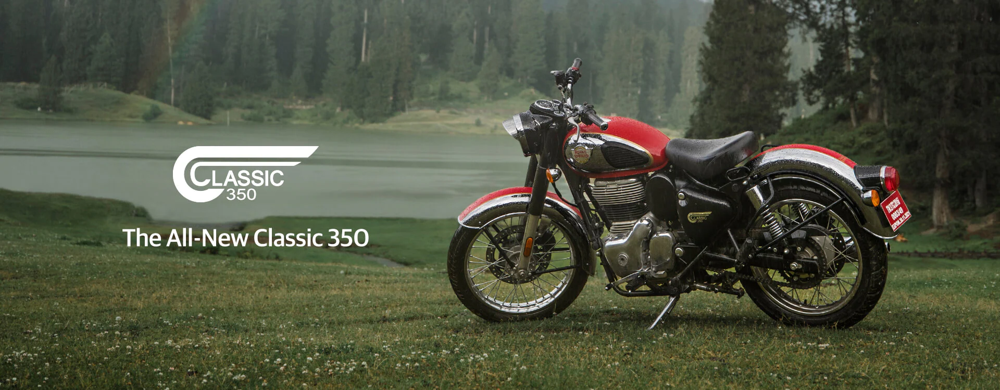
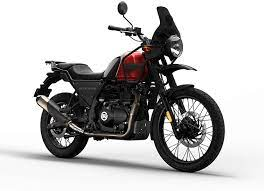

Royal Enfield
|
 |
Royal Enfield is an Indian multinational motorcycle manufacturing company headquartered in Chennai, Tamil Nadu, India.
x
| After the Indian Independence Act 1947 the new government looked for a suitable motorcycle for its army to patrol the country's border. |
 |
Visit Royal_Enfield_Bullet page
 |
The Royal Enfield Interceptor 650 is a parallel twin retro-styled motorcycle introduced by Royal Enfield in 2018. It is the first modern twin cylinder motorcycle developed by the company.
|
|

|
Royal Enfield is an Indian multinational motorcycle manufacturing company headquartered in Chennai, Tamil Nadu, India. The company is the oldest global motorcycle brand in continuous production,
|
royalenfield
Royal Enfield Bikes Price in India - BikeWale
Royal Enfield bike price starts from Rs. 1,47910. Royal Enfield offers 7 new models in India with the most popular bikes being Classic 350, Bullet 350, ...

|